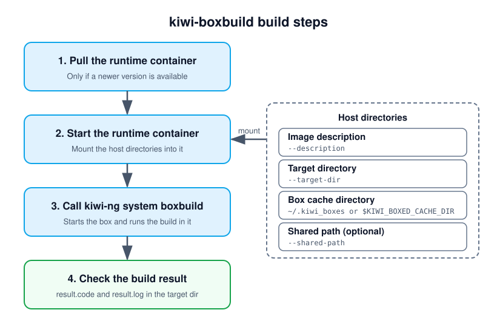

Building with kiwi-boxbuild
Overview
The kiwi-boxbuild command pulls a small runtime container and calls
the kiwi-ng system boxbuild command inside of it. The build itself
happens in a box as described in Building in a Self-Contained Environment, which is
started from within the runtime container.
In contrast to calling kiwi-ng system boxbuild directly, there is
only the need for podman on the build host. The main KIWI NG
requirements as well as the kiwi-systemdeps-boxbuild requirements,
like QEMU, are already provided by the runtime container. Neither
KIWI NG nor its dependencies have to be installed on the build host.
This makes kiwi-boxbuild useful on host system distributions for
which no KIWI NG packages exist, or to keep the build host free from
the KIWI NG tool chain. On Windows 11, kiwi-boxbuild runs the
runtime as WSL2 distribution instead of a container, see
Building on Windows 11.
Requirements
The kiwi-boxbuild command is provided by the kiwi-boxbuild
package. Add the KIWI NG repo from the Open Build Service. For details,
see Installation from OBS. The package only requires podman:
$ sudo zypper in kiwi-boxbuild
The box is a KVM based virtual machine started from within the runtime
container. Therefore, the runtime container runs as a privileged
container, and the calling user needs access to the KVM device
/dev/kvm on the build host. For building as a non-root user,
a rootless podman setup for this user is required.
Building with the kiwi-boxbuild command
The kiwi-boxbuild command is called in the same way as the
kiwi-ng system boxbuild command. The KIWI NG global options --profile,
--type, --kiwi-file and --debug are accepted directly by
kiwi-boxbuild, as these are passed along to the build in the box.
As with the boxbuild command, everything after the kiwi subcommand,
or the -- separator, is passed along to the build command running
in the box. The following example builds the same image as the
boxbuild example from Building in a Self-Contained Environment:
$ git clone https://github.com/OSInside/kiwi-descriptions.git
$ kiwi-boxbuild --profile Virtual --box leap kiwi \
--description kiwi-descriptions/suse/x86_64/suse-leap-15.6 \
--target-dir /tmp/myimage
The available boxes are listed with:
$ kiwi-boxbuild --list-boxes
Available boxes, select one with: kiwi-boxbuild --box NAME
NAME ARCHITECTURES MEMORY CPUS CONSOLE
tumbleweed x86_64, aarch64, s390x 8096M 4 hvc0
leap x86_64 8096M 4 hvc0
fedora x86_64 8096M 4 hvc0
ubuntu x86_64, aarch64 8096M 4 hvc0
universal x86_64, aarch64, s390x, ppc64le 8096M 4 hvc0
The list is read from the boxbuild --list-boxes output in the runtime
container. As the runtime container only provides QEMU for the host
architecture, a box is only usable if it is provided for the host
architecture. Boxes which are not provided for it are named below the
list.
When called, kiwi-boxbuild performs the following steps:

The steps performed by kiwi-boxbuild.
Note
As with the boxbuild command, only the image description, the
target directory and the optional shared path are shared with
the box. No other data will be shared with the host.
Supported boxbuild options
kiwi-boxbuild provides the options of the boxbuild command which
apply to a box started from within the runtime container. For
a description of the options, see kiwi-ng system boxbuild or
call kiwi-boxbuild --help.
The following options of the boxbuild command are not provided by
kiwi-boxbuild, as they are not expected to work in the runtime
container:
--containerThe runtime container does not provide
podmanto run the box as a container.kiwi-boxbuildalways builds in a virtual machine.--sshfs-sharing,--ssh-key,--ssh-portThe runtime container does not provide
sshfs, and the box cannot connect to the build host through SSH.--9p-sharingThe
9pbackend is used by default, if--virtiofs-sharingis not specified.--x86_64,--aarch64The runtime container only provides QEMU for the architecture of the build host.
kiwi-boxbuildalways selects the box for the host architecture.
Using a custom boxes configuration
The available boxes and their download locations are defined in the
boxes configuration file kiwi_boxed_plugin.yml, see
kiwi-ng system boxbuild. By default, the boxes configuration
provided with KIWI NG in the runtime container is used. With
--boxbuild-config FILE, the given host file is used instead. It is
shared read-only with the runtime container as
/etc/kiwi_boxed_plugin.yml, for building as well as for
listing the boxes:
$ kiwi-boxbuild --boxbuild-config my_boxes.yml --list-boxes
$ kiwi-boxbuild --boxbuild-config my_boxes.yml --box mybox kiwi \
--description kiwi-descriptions/suse/x86_64/suse-leap-15.6 \
--target-dir /tmp/myimage
Configuring the runtime container
By default, kiwi-boxbuild uses the following runtime container:
registry.opensuse.org/virtualization/appliances/selfcontained/runtime/images/boxbuild:latest
A different runtime container can be configured in the boxbuild
section of the KIWI NG runtime configuration file kiwi.yml:
boxbuild:
runtime_container: registry.example.com/my/boxbuild:latest
The runtime configuration files are read in the same order as KIWI NG reads them, and a setting in a later file takes precedence:
/usr/share/kiwi/kiwi.ymland the*.ymlfiles in/usr/share/kiwi/kiwi.yml.d/etc/kiwi.ymland the*.ymlfiles in/etc/kiwi.yml.d~/.config/kiwi/config.ymlThe file given with the
--configoption ofkiwi-boxbuild
The runtime container is expected to provide kiwi-ng as its entry
point, along with the requirements of the boxbuild command.
Building on Windows 11
kiwi-boxbuild can also be called on Windows 11. It detects that it
runs on Windows and uses the runtime as WSL2 distribution instead of
the runtime container, as there is no podman on Windows. The build
itself happens in a box, a virtual machine started with QEMU/KVM
inside of the WSL2 distribution, in the same way as on Linux.
Important
KIWI NG is an image builder for Linux images, also when it is called on Windows 11. WSL2 provides the Linux environment KIWI NG runs in, and the box is a Linux system. The image descriptions and the built images are the same as for a build on a Linux host. KIWI NG does not build Windows images.
Requirements on Windows 11
WSL2 in version 2.4.4 or later, which registers distributions from
wslimage files. Check the version withwsl --version, update it withwsl --update.Nested virtualization in WSL2. The box is a KVM based virtual machine started inside of WSL2, which is itself a virtual machine. This requires a WSL2 kernel and setup that allow for nested virtualization:
The CPU and the firmware must support virtualization, and it must be enabled.
Nested virtualization must be enabled for WSL2 in the WSL configuration file
%USERPROFILE%\.wslconfig:[wsl2] nestedVirtualization=true
The WSL2 kernel must provide KVM. If the default kernel does not, a custom kernel can be configured with the
kernelsetting in the[wsl2]section of.wslconfig.
Nested virtualization is available if
/dev/kvmexists in WSL2.kiwi-boxbuildchecks this before the build and stops with an error if it is missing. With--no-accel, the box runs without KVM, which works without nested virtualization but is very slow.The
kiwi-boxbuildexecutable for Windows, built from the sources intools/kiwi-boxbuildof the KIWI NG repository withcargo build --releaseon Windows.curl.exe, which is part of Windows 11, to download the runtime.
How the runtime is used
On the first call, kiwi-boxbuild downloads the WSL2 image of the
runtime and registers it as the WSL2 distribution kiwi-boxbuild.
The image and the files of the distribution are stored in
%LOCALAPPDATA%\kiwi-boxbuild. On each call, kiwi-boxbuild
checks for a newer image, in the same way as podman pulls a newer
runtime container. A newer image replaces the distribution.
By default, the WSL2 image for the architecture of the host is used, for example for x86_64:
https://download.opensuse.org/repositories/Virtualization:/Appliances:/SelfContained:/runtime/images/boxbuild.x86_64-WSL.wsl
The boxes are downloaded into the distribution, see Limitations on Windows.
Running a Build
kiwi-boxbuild is called in the same way as on Linux, with Windows
paths for the image description and the target directory, for example
in PowerShell:
> kiwi-boxbuild --profile Virtual --box leap kiwi `
--description C:\work\suse-leap-15.6 `
--target-dir C:\work\result
WSL2 mounts the Windows drives below /mnt, for example
C:\work is available as /mnt/c/work. kiwi-boxbuild
passes all paths to KIWI NG by their location in WSL2. With
--shared-path HOST_PATH, the host directory is shared at its location
in WSL2, for example C:\repos at /mnt/c/repos.
Limitations on Windows
Compared to a build on Linux, the following limitations apply on Windows 11:
- Paths on Windows drives only
The image description, the target directory, a shared path and a boxes configuration file given with
--boxbuild-configmust be located on a Windows drive, as only these are mounted in WSL2. Network shares cannot be used.The form
--shared-path HOST_PATH:BOX_PATHis not supported, the host directory is always shared at its location in WSL2.- Boxes are downloaded again after a runtime update
The boxes are stored in the WSL2 distribution. When a newer WSL2 image of the runtime replaces the distribution, the boxes are removed with it and downloaded again on the next build.
- No sizing of /dev/shm for virtiofs
With
--virtiofs-sharing, KIWI NG backs the memory of the box by a file in/dev/shm. On Linux,kiwi-boxbuildsizes/dev/shmof the runtime container to hold it. On Windows,/dev/shmof the WSL2 distribution is used as it is, the memory of the box must fit into it.- Builds without nested virtualization are slow
Without nested virtualization, the box can only run without KVM acceleration, using
--no-accel, which makes a build very slow.- No packaged executable
There is no
kiwi-boxbuildpackage for Windows, the executable has to be built from the sources, see Building on Windows 11.
Configuring the WSL2 image
A different WSL2 image of the runtime can be configured with the
runtime_wsl_image setting in the boxbuild section of the KIWI NG
runtime configuration file, as URL or as path of a local wsl file.
A local file is registered as it is, without an update check:
boxbuild:
runtime_wsl_image: https://example.com/images/boxbuild.x86_64-WSL.wsl
On Windows, the user configuration file is
%USERPROFILE%\.config\kiwi\config.yml, or the file given with
the --config option of kiwi-boxbuild.